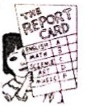

2018年北京市中考英语试题 原卷解析
2018年北京市高级中等学校招生考试
英语试卷
知识运用
一、单项填空
从下面各题所给的A、B、C、D个选项中，选择可以填入空白处的最佳选项。
1. My brother and I like football. play it together once a week.
A. IB. TheyC. WeD. You
【答案】C
【解析】
【详解】句意：我哥哥和我喜欢足球，我们每周一起玩一次。本题考查人称代词。A. 我；B. 他们；C. 我们；D. 你们。结合语境“我哥哥和我喜欢足球，______每周一起玩一次。”。可知，应该是“我们”。故选C。
【点睛】人称代词为单数时，按第二人称、第三人称、第一人称排列。人称代词分单复数，要根据语境，仔细分析，选择正确答案。
2. Happy birthday, Peter! Here’s a gift you.
A. forB. inC. withD. from
【答案】A
【解析】
【详解】句意：生日快乐，彼得！这是送给你的礼物。考查介词用法。A. 为了；B. 在…里；C. 和…；D.来自。结合语境“生日快乐，彼得！这是送给你的礼物。”。表示“给……的生日礼物”。用for。故选A。
【点睛】考查介词用法，这个知识点很广泛，有一些固定用法，需要日常积累，结合语境选择正确介词完成习题。
3. —— do you usually go to school, Mary?
——By bike.
A. WhenB. HowC. WhereD. Why
【答案】B
【解析】
【详解】句意：--玛丽，你通常怎么上学？ --骑自行车。考查疑问词。A. 什么时候；B. 怎么；C. 哪里；D.  什么。结合语境“玛丽，你通常怎么上学？骑自行车。”。可知，对乘坐某种交通工具提问，用疑问词how提问。故选B。
什么。结合语境“玛丽，你通常怎么上学？骑自行车。”。可知，对乘坐某种交通工具提问，用疑问词how提问。故选B。
【点睛】疑问词通常用来构成疑问句，要根据回答的具体内容进行选择，注意一些固定搭配，分清疑问词的用法。
4. Many people like pandas they are cute.
A. thoughB. ifC. whileD. because
【答案】D
【解析】
【详解】句意：很多人喜欢熊猫，因为它们很可爱。考查从属连词的辨析。选项A意为：虽然；选项B意为：如果；选项C意为：当……时候；选项D意为：因为。结合句意：很多人喜欢熊猫，因为它们很可爱。故选D。
5. I go now, or I'll miss my train.
A. canB. mightC. mustD. could
【答案】C
【解析】
【详解】句意：我必须走了，否则我就赶不上火车了。考查情态动词。A. 能；B. 可能；C. 必须；D.能。结合语境“我______走了，否则我就赶不上火车了。”。可知，应该是“必须”。故选C。
【点睛】情态动词无人称和数的变化；不能单独使用，必须与其后的动词原形构成谓语。否定形式通常在后面加not。要注意情态动词的不同用法。
6. Tony is of the three boys, but he is the tallest.
A. youngB. youngerC. youngestD. the youngest
【答案】D
【解析】
【详解】句意：托尼是这三个男孩中最小的，但他是最高的。考查最高级。A. 年轻的；B. 更年轻的；C. 最年轻的，通常加the；D. 最年轻的。结合语境“托尼是这三个男孩中最小的，但他是最高的。”。of the three boys是三者以上的比较，可知，用最高级the youngest最年轻的，最小的。故选D。
7. Bill likes reading. He picture books with his dad every evening.
A. readB. readsC. is readingD. has read
【答案】B
【解析】
【详解】句意：比尔喜欢读书。他每天晚上和爸爸一起看图画书。考查一般现在时。从every evening判断句子时态用一般现在时，排除C/D。主语是单数。故选B。
8. ——Paul, what were you doing at nine Last night?
——I a movie in the cinema with my friends.
A. was watchingB. watchC. have watchedD. will watch
【答案】A
【解析】
【详解】句意：——保罗，你昨晚九点在干什么？ ——我和我的朋友正在电影院看电影。考查过去进行时。根据—Paul, what were you doing at nine Last night？，可知是过去进行时，因此答语也用过去进行时。所以B/C/D/都不对。过去进行时的结构为were/was+doing。故选A。
9. David is a tennis player. He to play tennis when he was six years old.
A. beginsB. will beginC. beganD. has begun
【答案】C
【解析】
【详解】句意：戴维是个网球运动员，六岁时就开始打网球了。从when he was six years old判断句子时态用一般过去时。故选C。
10. ——Lucy, is your uncle a teacher?
——Yes,he is.He history for nearly 20 years.
A. teachesB. has taughtC. is teachingD. will teach
【答案】B
【解析】
【详解】句意：——露西，你叔叔是老师吗？ ——是的，他教了将近20年的历史了。考查现在完成时。根据for nearly 20 years可知，这是一个表示一段时间的时间状语，通常用于现在完成时，而且动词应该用延续性动词，现在完成时态结构为have/has+动词的过去分词。故选B。
【点睛】本题主要考查现在完成时。用法：表示过去发生或完成的动作对现在造成的影响或结果，还表示过去发生动作一直持续到现在。其结构是have/has+及物动词的过去分词。此题注意短暂性动词和延续性动词的区别。
11. A new international airport in the city next year.
A. completesB. is completed
C. will completeD. will be completed
【答案】D
【解析】
【详解】句意：一座新的国际机场明年将要在这所城市完工。一般将来时的被动语态。completes一般现在时；is completed 一般现在时的被动语态；will complete一般将来时； will be completed一般将来时的被动语态。根据句子的主语是“A new international airport”以及时间状语“next year”所以要用一般将来时的被动语态来填空，因此可知这句话的意思是“一座新的国际飞机场明年将要在这所城市完工。”故选D。
12. ——Alice, could you tell me London?
——Sure. Last Sunday
A. when Mr.Smith leftB. when Mr.Smith wi11 leave
C. when did Mr.Smith leaveD. when will Mr.Smith leave
【答案】A
【解析】
【详解】句意：——爱丽丝，你能告诉我史米斯先生什么时候离开伦敦的吗？ ——当然可以。上星期天。根据could you tell me _______? 可知，本题考查宾语从句，宾语从句中一般为陈述语序，选项C/D是疑问语序，所以排除掉；再根据Last Sunday，可知这里指的是过去的时间，时态用一般过去时。故选A。
【点睛】本题考查宾语从句，做题时注意三要素时态、语序和引导词。本题先考虑语序问题，再根据句子的上下文的意思，做出选择。
二、完形填空
阅读下面的短文，掌握其大意，然后从短文后各题所给的的A、B、C、D四个选项中，选择最佳选项。
Real Solutions（解决方法） to Problems
Thirty engineers were working as a team in a company. They were young and eager to learn. The management decided to teach them about finding real solutions to problems
One day, the team was called for a ____13____in a hall. They were quite surprised and all reached the hall holding various____14____. As they entered, they found a box placed in the center, full of flat balloons
The manager asked everyone to pick a balloon and blow it up. Then they were asked to write their names on their respective(各自的)balloons ____15____so that the balloons wouldn’t blow out. All tried, but not everyone was ___16___. Five balloons blew out due to pressure（压力）.

Those who failed to mark their names on the balloons were ___17___ out of the game. As a result, 25 engineers came to the next level. All the balloons carrying their names were ___18___ and then put into a room, here and there.
The engineers were told to pick the balloon with his or her name on, All the 25 engineers began to search for the respective balloons in a rush. It was almost 15 minutes but no one was able to ___19___ the right one. The second level of the game was over.
Then came the final level. the engineers were asked to pick any balloon and give it to person named on the balloon. Within a couple of minutes, all balloons ___20___ the hands of the respective engineers.
The manager announced this was the real solution to the problem. Many times in our life,sharing and helping others give us real solutions to problems.
13. A. gameB. showC. concertD. party
14. A. purposesB. suggestionsC. thoughtsD. plans
15. A. quietlyB. carefullyC. secretlyD. clearly
16. A. honestB. readyC. patientD. successful
17. A. checkedB. helpedC. ruledD. cleaned
18. A. collectedB. weighedC. tiedD. cleaned
19. A. markB. hideC. numberD. find
20. A. freedB. reachedC. liftedD. hit
【答案】13. A 14. C 15. B 16. D 17. C 18. A 19. D 20. B
【解析】
【分析】本文主要讲述的是关于协作的事情。游戏一：30名工程师，在气球上签名，结果5人被淘汰。游戏二：然后把成功签上名的气球放到一个房间里，先让25名工程师找带有自己名字的气球，结果很少成功；游戏三：让工程师们挑选任何一个气球，并把它送给签在气球上名字的人。结果几分钟内，所有气球都到达了各自的工程师手中。这个故事告诉我们：一件事我们或许做起来很难，但是如果和别人一起做，相互帮助，就会事半功倍。
【13题详解】
句意：有一天，三十名工程师被要求 大厅里参加游戏。考查名词辨析。A. game游戏；B. show表演；C. concert音乐会；D. party聚会。下文提到The second level of the game was over游戏结束，故选A。
大厅里参加游戏。考查名词辨析。A. game游戏；B. show表演；C. concert音乐会；D. party聚会。下文提到The second level of the game was over游戏结束，故选A。
【14题详解】
句意：他们很惊讶，都走到大厅里，抱着各种各样的想法。考查名词辨析。A. purposes目的；B. suggestions建议；C. thoughts想法；D. plans计划。根据all reached the hall holding various带着各种 _______ 来到这里，前面提到惊奇，所以是每个人有各自的想法。故选C。
【15题详解】
句意：然后要求他们在各自的气球上仔细地写上自己的名字，这样气球就不会爆了。考查形容词辨析。A. quietly轻轻的；B. carefully仔细的；C. secretly秘密的；D. clearly清楚的。根据the balloons wouldn't blow out不能打破气球，所以是轻轻的。故选A。
【16题详解】
句意：大家都试过了，但不是每个人都成功了。考查形容词辨析。A. honest诚实的； B. ready准备好的；C. patient有耐心的；D. successful成功的。根据 Five balloons blew out due to pressure气球坏了5个，可知并不是所有人都成功了。故选D。
【17题详解】
句意：那些没有在气球上签名的人被排除在比赛之外。考查动词辨析。 A. checked检查； B. helped帮助；C. ruled规则；D. cleaned清晰。根据Those who failed to mark their names on the balloons 失败的人，所以是出局，rule out排除；故选C。
【18题详解】
句意：所有带着名字的气球都被收集起来，然后放在一个房间里，到处都是。考查动词辨析。A. collected收集；B. weighed称重；C. tied打结；D. cleaned打扫。根据then put into a room, here and there将气球放在房子里，所以是先把所有的气球收集起来。故选A。
【19题详解】
句意：已经快15分钟了，但是没有人能找到带有自己名字的气球。考查动词辨析。A. mark标记；B. hide躲藏；C. number计数；D. find找到。根据right one正确的那个人，由此推测是找到那个人。故选D。
【20题详解】
句意：几分钟内，所有气球都到达了各自的工程师手中。考查动词辨析。A. freed释放； B. reached到达；C. lifted 举起；D. hit打击。根据the hands of the respective engineers气球上名字对应的人，由此可知是交给那个人。故选B。
三、阅读下列短文．根据短文内容，从文后各所给的A、B、C、D四个选项中，选出最佳选项。
A

Roger: Hi, there! It was my 15th birthday last Saturday. Some of my friends and Alan, my cousin, came to celebrate it. Everyone brought me a gift. We played games, sang songs and had a big birthday cake. It was really a wonderful day! Did you do anything special last week?

Jessica: Yes, My class were on a school field trip last week. First, we went to the University of North Carolina to learn about the history of its basketball team. Many basketball stars were students there. Then we visited a museum. We learned about how the plane was invented and took many pictures there.
 Sara: Well
Sara: Well I was lucky enough to go to a conference（会议）on charity(慈善) last Wednesday. I was excited to meet a lot of kind people there. One of them was a boy named Richard. He spoke at the conference about the charity work that he had done in the past few years.
I was lucky enough to go to a conference（会议）on charity(慈善) last Wednesday. I was excited to meet a lot of kind people there. One of them was a boy named Richard. He spoke at the conference about the charity work that he had done in the past few years.

Martin: It was a different week than usual. Last Thursday, my school band（乐队）went to Atlanta to perform in a competition. I played the violin and we won a prize! On Friday we went to the Georgia Aquarium and got to see different kinds of sea life from all over the world. It was really cool!
21. When did Roger have his birthday party?
A. Last WednesdayB. last Thursday
C. Last FridayD. Last Saturday.
22. Who went on a school field trip last week?
A. Alan.B. JessicaC. SaraD. Richard.
23 Martin went to Atlanta to .
Martin went to Atlanta to .
A. speak at a conferenceB. organize a party
C. perform in a competitionD. visit a university
【答案】21. D 22. B 23. C
【解析】
【分析】文章分别介绍了四个孩子上周的活动。上周六，罗杰举行了15岁的生日聚会；杰西卡上个星期参加学校郊游；萨拉上星期三很幸运地去参加了一个慈善会议。马丁去亚特兰大参加比赛中的表演。
【21题详解】
细节理解题。根据Roger：It was my 15th birthday last Saturday罗杰：这是我上周六的15岁生日。可知罗杰的生日是上周六。故选D。
【22题详解】
细节理解题。根据Jessica：Yes，My class were on a school field trip last week杰西卡：是的，上个星期我的班级去参加学校郊游了，可知杰西卡上个星期参加学校郊游。故选B。
【23题详解】
细节理解题。根据Martin：Last Thursday, my school band（乐队）went to Atlanta to perform in a competition，马丁：上周四，我的学校乐队在亚特兰大的一次比赛中表演了，可知，马丁去亚特兰大在比赛中表演。故选C。
【点睛】怎样做细节理解题？
用细节定位法来做细节理解题。
细节理解题属直接解答性问题，是阅读理解题中最简单的一种，多数属中低难度的送分题。但由于中考所占的比例很大，应特别引起注意。
事实和细节题的命题特点是：把某词语、某个句子或某具体事实用不同于原文的另一方式或句型表达，即同义改写。解答这类题的窍门是：A)注意掌握英语的多种表达法；B）正确分析词语在句中的作用；C）熟练运用英语的句型转换；D）读懂题干所提出的问题，并准确地找到文中涉及该问题的句子。
做细节题具体方法与步骤如下：
（1）略读材料,大概了解原文，掌握中心或主旨。
（2）按文章的体裁，作者写作的组织模式及有关的信息词，如for example，first，second…等预测应该到何处寻找自己所需要的事实。
（3）将自己精力放在寻找你所需要的细节上，快速通篇跳读，眼睛自左至右，自上而下呈Z形扫视，直到找到细节出处，待找到含细节句子时，放慢速度，仔细核对比较内容，直至找到答案。
B
A Beautiful Moment
When I was in high school.I worked part-time helping Dad sell fruits and vegetables at a matket. One day，as I was preparing the fruits. A little boy came by with his mom and sister. He was about eight years old，and the girl.five or six. They were looking the fruits in front of me. I heard the kids say to their mom(in French),"They're good!" I knew it was French. Because I can speak and understand it.
Then I noticed how mom was picking the fruits.At first I thought she was really looking at the fruits because she was facing them. But then I noticed how much she had to feel and smell each one as she picked them out. And often asked her son if it looked okay, but looked way above where his face was. Putting what I saw together,I was sure she was blind.
Both of the kids continued to help their mom pick out the fruits .The son made sure the fruits were not obviously bad, and the daughter handed them to her mom. The woman then felt each one and smiled, and the daughter would put them into their basket .The kids were smiling while helping their mom pick the fruits out.
Their smile and gentle manner moved me in a way that never happened before .It was so beautiful to see such young kids so willingly help. Most kids that age would be picking out candies or toys in a store for themselves, instead of helping their mom pick out fruits as the two kids did.
It was great to witness the moment, but not so great because I didn’t tell the mom how beautiful her children were in their language .this is what I regret to this day.
24. The women and her kids came to the market to buy .
A. fruitsB. vegetablesC. candiesD. toys
25. According to what he saw, the writer was sure the mother couldn’t .
A. speakB. seeC. smellD. hear
26. The writer was moved because .
A. the mother was brave to face her problems.
B. the kids were polite and kind to each other
C. the mother was careful in picking out things
D. the kids were so willing to help their mother
【答案】24. A 25. B 26. D
【解析】
【分析】文章介绍了两个孩子帮盲人妈妈挑选水果，作者被这温情一幕打动。
【24题详解】
细节理解题。根据Then I noticed how mom was picking the fruits．然后我注意到妈妈是如何挑选水果的，可知他们是来买水果的，故选A。
【25题详解】
细节理解题。根据I was sure she was blind．我确定她是盲人，可知作者认为这个妈妈看不到，故选B。
【26题详解】
细节理解题。根据It was so beautiful to see such young kids so willingly help． Most kids that age would be picking out candies or toys in a store for themselves， instead of helping their mom pick out fruits as the two kids did．看到这么小的孩子们如此乐于助人，真是太美了。大多数同龄的孩子会在商店里为自己挑选糖果或玩具，而不是像两个孩子那样帮助他们的妈妈挑选水果。可知作者被这两个孩子愿意帮助他们的母亲而感动，故选D。
【点睛】本文是一篇阅读选择题，做题时要先通读短文，弄清楚短文大意，然后在文中找出相关句子，根据句子选择正确答案。
C
Some primary schoolchildren have been raised in homes with more green space around. They are likely to come with larger volumes of white and grey matter in certain areas of the brain. These differences are associated(关联) with beneficial effects on cognitive function (认知功能) . This is the main conclusion of a study led by the Barcelona Institute for Global Health.
The study was performed among 253 schoolchildren in Spain .Lifelong exposure(接触) to green space in the living places was recorded—using the information on the children’s addresses from birth up through to the time of the study. Brain structure was studied using 3D magnetic resonance imaging (MRI). Working memory and inattentiveness(注意力不集中)were graded with computers.
“This is the first study that shows the association between long-term exposure to green space and brain structure.” Says Dr. Payam Dadvand, the leading researcher of the study, “Our findings suggest that exposure to green space early in life could result in beneficial structural changes in the brain.”
The findings show that long-term exposure to greenness is positively associated with white and grey matter volumes in several parts of the brain. Some of them are related to higher scores on cognitive tests. Moreover, larger volumes of white and grey matter in those parts might lead to better working memory and less inattentiveness.
Exposure to nature has been thought to be necessary for brain development in children. Another study of 2,593 children shows that children in school with more green space have a greater increase in working memory and a greater decrease in inattentiveness.
Humans are believed to be tied to nature. Playing in greener areas offers children opportunities to search and learn. Accordingly, green space is thought to prompt important exercises in discovery, creativity and risk taking. These exercises in turn positively influence brain development.
Dr. Dadvand’s study suggests how such structural changes could bring about the beneficial effects of green spaces on cognitive development, it also adds to the proof that suggests the lasting effects of early life exposure to greenness on our health and the benefits of increasing greenness in cities.
Further studies are needed to prove the findings in other populations, settings and climates. And researchers need to examine differences according to the nature and quality of green space.
27. The second paragraph is mainly about .
A. how the study was performedB. what was recorded in the study
C. how long the study lastedD. who took part in the study
28. The word “prompt” in paragraph 6 probably means “ “.
A. controlB. encourageC. balanceD. change
29. What can we learn from the passage?
A. Working memory influences white and grey matter in the brain.
B. Dr. Dadvand stressed the importance of changing the environment.
C. Studies proved the influence of greenness on populations outs of Spain.
D. Living in greener neighborhoods benefits children in brain development.
【答案】27. A 28. B 29. D
【解析】
【分析】本文主要讲述了一项科学实验的结果，结果表明生活在绿色环境下有利于大脑的发育，但是这个结论是否适合于每个地方的人还有待观察和后续实验证明。
【27题详解】
细节理解题。根据The study was performed among 253schoolchildren in Spain可知，此段主要讲述的是有关于研究如何进行的事情，故选A。
【28题详解】
词意猜测题。A. control控制；B. encourage鼓励，促进；C. balance平衡；D. change改变。根据These exercises in turn positively influence brain development可知，是极大的促进大脑的发育，四个选项中意思最为接近的是鼓励，促进，故选B。
【29题详解】
推理判断题。根据Our findings suggest that exposure to green space early in life could result in beneficial structural changes in the brain可知，在绿色环境下生活有利于大脑发育，故选D。
【点睛】对于阅读表达题，首先应该阅读全文，了解绿色环境对大脑发育的影响，然后根据题目意思进行分析，确定答案。
D
We often reach a point in our life when we should be ready for change that will help us unlock our self-improvement power. However, there’s always something staring at us right under our nose but we don’t see it. The only time we think of unlocking our self-improvement power is when everything gets worst.
When do we realize that we need to change diets? When none of our shirts and jeans would fit us. When do we stop eating candies and chocolates? When all of our teeth have fallen off. When do we realize that we need to stop smoking? When our lungs have gone bad. We see the warning signs and signals when things get rough and difficult.
The only time most of us ever learn about unlocking our self-improvement power is when the whole world is falling apart. We think and feel this way because it is not easy to change, but change becomes more painful when we ignore(忽视) it，
Change will happen, like it or hate it. At one point or another. we are all going to finally unlock our self-improvement power not because the world says so. But because we realize it's for our own good.
Happy people don’t just accept change; they embrace (拥抱)it. Unlocking our self-improvement power means unlocking ourselves out of the box of thought that is just the way we are. It is such a poor excuse for people who fear change.
Jane always tells everyone that she doesn't have the courage to be around groups of people. She heard her family tell the same things about her to other people. Over the years, that is what Jane has believed. Every time a great crowd come, she steps back and locks herself up in a room. Jane not only believes in her story, but lives it!
Self-improvement may not be everybody’s favorite word, but if we look at things in a different way, we might have greater chances of enjoying the whole process instead of counting the days until we are fully improved. Three sessions in a week at the gym would result in a healthier life. Reading books every day would build up knowledge. And only when we are enjoying the whole process of unlocking our self-improvement power will we realize that we’re beginning to take things light and become happy.
30. The writer mentions the three questions in Paragraph 2 to show that .
A. we learn our lessons when we experience pain.
B. we are responsible for the problems we meet.
C. life fails us when we get into the wrong way.
D. life is a long journey full of ups and downs.
31. What is the key to solving Jane’s problem?
A. She needs to remember why she started.
B. She has to know how to get on with people.
C. She has to realize she is not what she is in her story.
D. She needs to understand the importance of confidence.
32. The writer probably agrees that .
A. the world tells us how to improve ourselves.
B. people change when they find it easy to do that.
C. welcoming change in life is a drive to become better.
D. enjoying the process of self-improvement makes life simpler.
33. Which of the following would be the best title for the passage?
A. Is it important to take things light?
B. Is it necessary to embrace challenges?
C. To hold on to the last moment or to give up?
D. To free ourselves out of the box or to stay in it?
【答案】30. A 31. C 32. C 33. D
【解析】
【分析】这是一篇人生感悟类阅读，主要介绍在我们的生活中，当我们准备好要改变的时候，我们经常会达到一个点，这将帮助我们打开自我提升的力量。打开自我提高能力的唯一时刻是当一切变得最糟糕的时候。只有当我们享受解锁自我完善能力的整个过程，从固定思维中解脱出来时，我们才会意识到我们开始轻而易举地获得快乐。
【30题详解】
细节理解题。根据第一段最后一句The only time we think of unlocking our self-improvement power is when everything gets worst我们认为打开自我提高能力的唯一时刻是当一切变得最糟糕的时候。可知，作者列举“什么时候我们意识到我们需要改变饮食？当我们的衬衫和牛仔裤都不适合我们的时候，我们什么时候停止吃糖果和巧克力？当我们所有的牙齿都脱落了。我们什么时候意识到我们需要戒烟？”这些的目的是当我们经历痛苦时，我们学到了教训。故选A。
【31题详解】
细节理解题。根据倒数第二段 Jane always tells everyone that she doesn't have the courage to be around groups of people. She heard her family tell the same things about her to other people. Over the years, that is what Jane has believed. Every time a great crowd come, she steps back and locks herself up in a room. Jane not only believes in her story, but lives it! 简总是告诉每个人她没有勇气和一群人在一起。她听到她的家人对其他人说关于她的同样的话。多年来，这就是简所相信的。每次一大群人来，她都后退一步，把自己锁在一个房间里。简不仅相信她的故事，而且生活在其中！可知，解决简问题的关键是她必须意识到她不是她故事中的那样的人。故选C。
【32题详解】
细节理解题。根据第五段Happy people don't just accept change; they embrace（拥抱）it. 快乐的人不只是接受变化，他们拥抱变化。及最后一段And only when we are enjoying the whole process of unlocking our self-improvement power will we realize that we're beginning to take things light and become happy. 只有当我们享受开启自我提升能力的整个过程时，我们才会意识到我们开始随遇而安并变得快乐。可知，作者可能同意欢迎生活中的变化是一个变得更好的动力。故选C。
【33题详解】
标题猜测题。根据第五段Unlocking our self-improvement power means unlocking ourselves out of the box of thought that is just the way we are. It is such a poor excuse for people who fear change解开自我提高的力量意味着把自己从思想的框框中解脱出来，这正是我们的方式。对于害怕改变的人来说，这是一个很糟糕的借口。倒数第二段最后一句Every time a great crowd come, she steps back and locks herself up in a room. Jane not only believes in her story, but lives it! 每次一大群人来，她都会后退一步，把自己锁在一个房间里。简不仅相信她的故事，而且生活在其中！及最后一句And only when we are enjoying the whole process of unlocking our self-improvement power will we realize that we're beginning to take things light and become happy. 只有当我们享受开启自我提升能力的整个过程时，我们才会意识到我们开始把一切看淡并变得快乐。可知，标题可以是“把自己从思维的盒子里解放出来还是留在里面？”。故选D。
阅读短文，根据短文内容回答问题．
When it comes to the letter grade on your test or homework, you might notice that there is no letter E. Have you ever thought about why that is so?
In the A, B, C, D and F grading system, the first four letters are typically considered passing grades. An F in this system simply stands for“fail”.The word“fail”happens to start with the letter F, which seems to leave out the letter E. The fact”．Some schools have U grade for“unsatisfactory”,or I grade for “incomplete”.

Even with all this said, we should also point out that E grade actually has been
used pretty commonly throughout the history of letter grades in the US.
The first college in the US to use a letter grading system like the ones we use today is Mount Holyoke College. In 1897,they began to use the following grading scale:
A: 95-100%(excellent) B: 85-94%(good) C: 76-84%(fair)
D: 75%(barely passed) E: below 75%(failed)
We can see the inclusion of E instead of F.
Gradually,the letter grading system became more popular throughout the US. However, many schools decided to drop the E grade and go straight to F.There is no evidence(证据) to really support this,but one possible explanation is that teachers were worried that some students and parents might mistake E for “excellent”.
Why do we have letter grades? Well,part of the reason is that they made grading simpler during a time of great change for schools. As the 20th century began,growing cities and an increase in immigration led to larger school classrooms. Most teachers at that time thought this new letter grading system was an easy,fair and clear way to grade students.
Today,more and more people argue that letter grades don’t fully reflect(反映) student learning。However，as teachers try to improve grading methods,many parents continue to favor the letter grades they got as kids, they are familiar(熟悉) and easy for parents to understand. So while they might not be perfect, the letter grades probably aren’t going away any time soon.
34. what does an F stand for in the A、B、C、D and F grading system?
35. when was the letter grading system first used in the US college?
36. what is one possible explanation for dropping the E grade?
37. what did most teachers think of the letter grading system in the 20th century?
38. why do many parents still prefer the letter grades today?
【答案】34. It stands for “fail”
35. In 1897
36. Teachers were worried that some students and parents might mistake E for “excellent”
37. They thought this new letter grading system was an easy fair and clear way to grade students
38. Because the letter grades are familiar and easy for parents to understand
【解析】
【分析】短文讲了判定测试或作业的字母等级方法，详细的介绍了字母所代表的含义，及其人们对这种评定方法的看法等。
【34题详解】
细节理解题。根据第二段句子 In the A, B, C, D and F grading system, the first four letters are typically considered passing grades. An F in this system simply stands for “fail”. 在A、B、C、D和F评分系统中，前四个字母通常被认为是及格分数。这个系统中的F仅仅表示"失败"。可知F表示“失败”。故答案为An F in this system stands for “fail”.
【35题详解】
细节理解题。根据第四段句子The first college in the US to use a letter grading system like the ones we use today is Mount Holyoke College. In 1897, they began to use the following grading scale. 美国第一个使用字母评分系统的大学是Mount Holyoke College. 1897年，他们开始使用以下等级量表。可知在1897年。故答案为In 1897年。
【36题详解】
细节理解题。根据倒数第三段句子 However, really support this, but one possible explanation is that teachers were worried that some students and parents might mistake E for “excellent”. 然而，许多学校决定放弃E级，直接进入F。真的没有证据支持这一点，但一个可能的解释是，老师担心一些学生和家长可能误认为E为“优秀”。可知老师担心一些学生和家长可能误认为E为“优秀”。故答案为Teachers were worried that some students and parents might mistake E for “excellent”.
【37题详解】
细节理解题。根据倒数第二段句子Most teachers at that time thought this new letter grading system was an easy, fair and clear way to grade students. 当时的大多数老师认为这种新的字母评分系统是一种简单、公平、清晰的给学生打分的方式。可知当时的大多数老师认为这种新的字母评分系统是一种简单、公平、清晰的给学生打分的方式。故答案为Most teachers at that time thought this new letter grading system was an easy，fair and clear way to grade students.
【38题详解】
细节理解题。根据最后一段句子However, as teachers try to improve grading methods, many parents continue to favor the letter grades they got as kids, they are familiar（熟悉）and easy for parents to understand. So while they might not be perfect, the letter grades probably aren't going away any time soon. 然而，当教师试图改进评分方法时，许多家长仍然喜欢孩子们得到的字母等级，他们对父母来说很熟悉，也很容易理解。因此，尽管他们可能不是完美的，但字母等级不会很快就消失。可知它们是父母所熟悉和容易理解的。故答案为They are familiar and easy for parents to understand.
【点睛】做题时首先对原文材料迅速浏览，掌握全文的主旨大意。其次，细读题材，各个击破。掌握全文的大意之后，细细阅读材料后的问题，弄清每题要求后，带着问题，再回到原文中去寻找、捕获有关信息。
五、文段表达
39.从下面两个题目中任选一题，根据中文和英文提示，完成一篇不少于50词的文段写作，文中已给出内容不计入总数．所给提示词语仅供选用，请不要写出你的校名和姓名。
题目一：
39. 假如你是李华，你们学校要举办一场关于京剧的讲座，你打算邀请你们班交换生Peter参加，请用英语写一封电子邮件，告诉他讲座时间和地点以及需要做什么准备。
提示词语：lecture（讲座）,invite,information,question,online
提示问题：·When and where will you have the lecture?
Dear peter,
How is it going?
There’ll be a lecture on Peking Opera in our school.
If there is anything that I can do, please let me know.
Yours,
LiHua
what do you advise Peter to prepare for it?
【答案】Dear Peter
How is it going?
There’ll be a lecture on Peking opera in our school .The Peking opera will start at 10:00 this Friday morning in the school hall.I am writing to invite you to take part in the meaningful lecture.
In the lecture ,we can not only get some useful information about the Peking opera ,but also get close to the traditional Chinese culture, which can benefit us a lot.
There are some suggestions for you to prepare for it. First of all, remember to be there on time. What’s more, don’t forget to bring a camera with you ,which can record the precious moment. Last but not least, it’s a golden chance for you to come up with some questions that you are willing to learn about.
If there is anything that I can do please let me know.
Yours
Li Hua
【解析】
【详解】这是一篇提纲作文，因为要邀请交换生Peter参加京剧讲座。所以要根据提纲中的相关信息向Peter介绍一下京剧讲座的时间和地点以及需要做什么准备。时态为一般现在时，人称为第一人称。写作时，在解答写作这类试题时，要根据短文的中心思想考虑如何开头、展开和结尾，设想几个承上启下的连词，将主要句型、关键词语记下，形成提纲，写时切忌结构分散，废话连篇，严重跑题。语法要正确，表达要符合英语习惯，注意时态、时间状语的搭配及主谓一致问题。写作中适当使用连词，注意上下文联系紧密，符合逻辑关系，表达具有条理性。
【高分句型一】
I am writing to invite you to take part in the meaningful lecture. 我写信是想邀请你参加这个有意义的演讲。这里invite sb. to do sth. 表示邀请某人做某事。
【高分句型二】
If there is anything that I can do, please let me know. 如果有什么我能做的，请告诉我。这里let sb. do sth. 表示让某人做某事。
题目二：
40. “静以修身，俭以养德”，勤俭节约是中华民族的传统美德，无论生活富足与否，我们都应该提倡节俭，拒绝浪费。
某英文网站在开展以“节约是美德”为主题的征文活动，假如你是李华，请用英语写一篇短文投稿．谈谈生活中你是怎么做的，以及这样做的意义。
提示词语：thrifty(节约的).save.turn off.money.virtue（美德）
提示问题：·What do you do in your daily life？
It’s one of our traditional virtues to be thrifty.
why do you do so？
【答案】It’s one of our traditional virtues to be thrifty Being thrifty is a good virtue which has been passed down from generation to generation . It’s a good idea to start on in our daily life.
First of all , I constantly check the lights and the taps to make sure that they are off when leaving the house , Besides, never have I wasted any food, what’s more, I don’t spend too much money on unnecessary things and save money regularly.
The reason why I do so is that I want to make a difference to my life, As the old saving goes, “Waste not, want not”I make up my mind to be thrifty as much as possible. I think everyone should take actions to stick to this virtue.
【解析】
【详解】这是一篇话题作文。主题为“节约是美德”，考生需要从两个方面作答，第一个方面是介绍日常生活中你都做了什么？第二个方面，你为什么这样做？时态为一般现在时，人称为第一人称。写作时，在解答写作这类试题时，要根据短文的中心思想考虑如何开头、展开和结尾，设想几个承上启下的连词，将主要句型、关键词语记下，形成提纲，写时切忌结构分散，废话连篇，严重跑题。语法要正确，表达要符合英语习惯，注意时态、时间状语的搭配及主谓一致问题。写作中适当使用连词，注意上下文联系紧密，符合逻辑关系，表达具有条理性。
【高分句型一】
It's a good idea to start on in our daily life. 在我们的日常生活中提倡它是个好主意。这里It's a good idea to do sth. 表示做某事是一个好主意。
【高分句型二】
I think everyone should take actions to stick to this virtue. 我认为每个人都应该采取行动来坚持这一美德。这里think后面跟的是一个宾语从句。